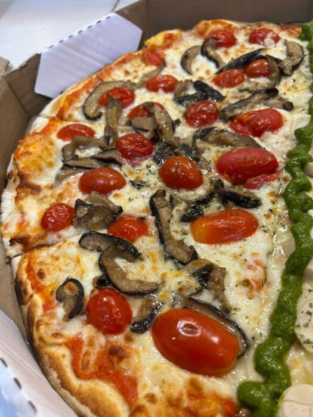
Shitake c/ Mussarela de Búfula
Toque oriental com charme italiano! Molho italiano + mussarela de búfala + shitake salteado no azeite + alho + tomate uva.
Início · Sabores da casa
Fora das clássicas, o cardápio da La Strada tem búfala, cogumelos, carne de sol com banana da terra, camarão e três doces. Descrições como a casa escreve, com o preço da grande e da pequena.
Búfala e cogumelos

Toque oriental com charme italiano! Molho italiano + mussarela de búfala + shitake salteado no azeite + alho + tomate uva.
Uma explosão de umami! Molho italiano + mussarela de búfala + shimeji salteado + alho + tomate uva.
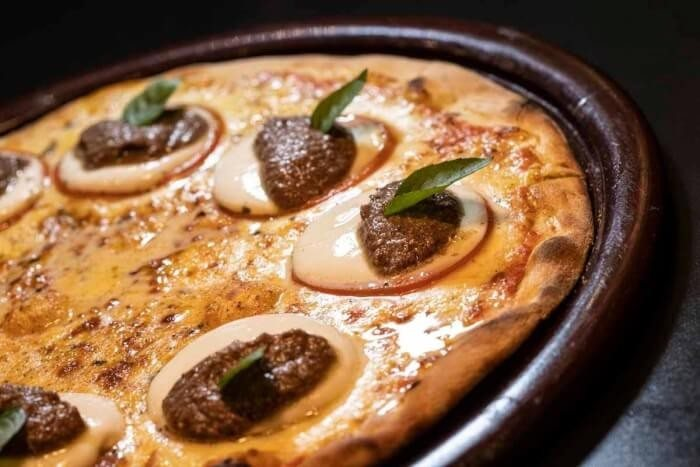
Refrescante e cheia de sabor! Molho italiano + mussarela + tomate + mussarela de búfala fresca + pesto de azeitonas pretas.
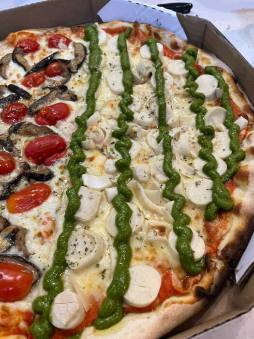
Sabor refinado e inesquecível! Molho italiano + catupiry + abobrinha + mussarela de búfala + pesto de manjericão + amêndoas laminadas.
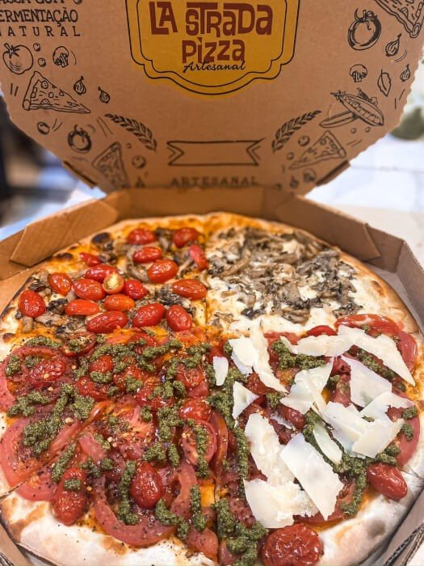
Leve e saudável! tomate rasteiro + tomate uva + pimenta calabresa + pesto de manjericão + lascas de parmesão.
Versão gourmet do clássico! Molho italiano + mussarela de búfala + tomate uva + manjericão + parmesão.
Carne de sol e agridoce
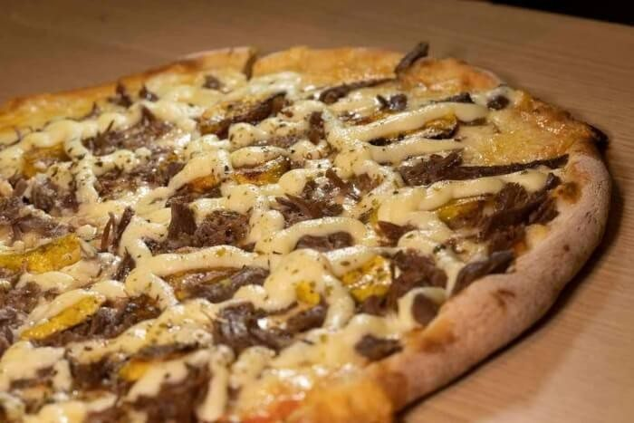
Combinação nordestina que surpreende! Molho italiano + mussarela + carne de sol desfiada + banana da terra assada + Catupiry.
Agridoce chiquérrima! Molho italiano + mussarela + peito de peru + mussarela de búfala + geleia de amora.
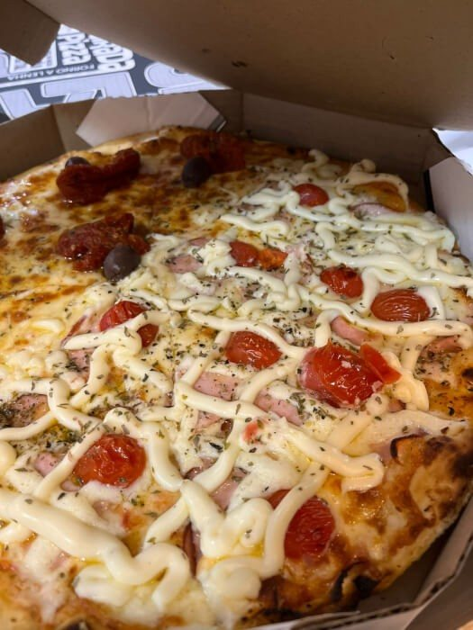
Leve, mas cheia de sabor! Molho italiano + mussarela + peito de peru defumado + catupiry + tomate uva.
Do mar
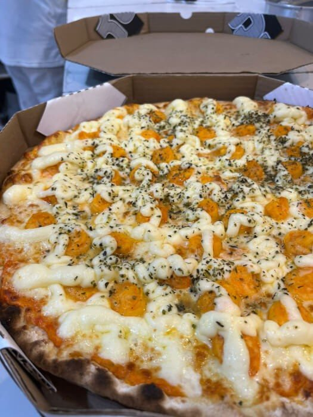
O sabor do mar na sua pizza! Molho italiano + mussarela + camarão temperado + catupiry.
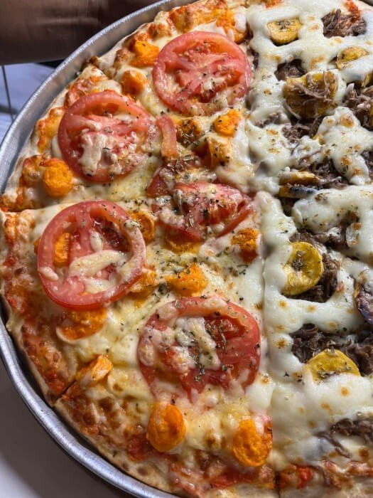
Para quem quer se sentir na praia! Molho italiano + mussarela + camarão + tomate temperado + parmesão.
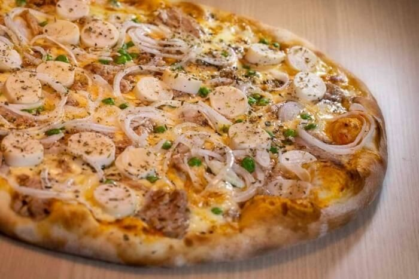
Uma explosão de sabores do mar com aquele toque especial La Strada! Molho italiano artesanal + mussarela derretida + atum suculento + palmito crocante + ervilhas verdinhas + cebola fresquinha.
Sabor marcante para paladares exigentes! Molho italiano + mussarela + tomate + aliche.
Picantes
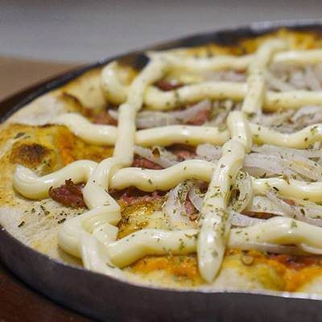
A cremosidade que equilibra a pimenta! Molho italiano + mussarela + calabresa moída picante + catupiry + cebola.
Pra quem gosta de um fogo na boca! Molho italiano + mussarela + calabresa moída apimentada + cebola.
Doces
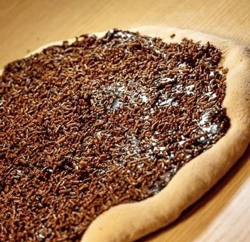
Brigadeiro Gourmet: Com granulado crocante, perfeito pra adoçar o dia.
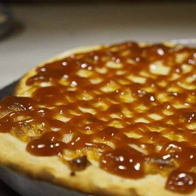
A clássica combinação de mussarela e goiabada cremosa.
Nutella com Confete: Crocante e irresistível!
E o Mini Pudim, a R$ 12,00, na lista de doces do cardápio.
Dúvidas frequentes
Tem: Vegetariana, Marguerita, Mediterranea, Rúcula, Palmito, Abobrinha, Brócolis com gorgonzola, Caprese e as de cogumelo, entre outras. Confira os ingredientes de cada uma no cardápio.
A Sertaneja Especial: carne de sol desfiada, banana da terra assada e Catupiry.
Sim, na grande ou na pequena, pela comanda.
Fim da estrada
Monte a pizza, escolha o bairro e mande a comanda pronta para o WhatsApp da La Strada. De terça a domingo.